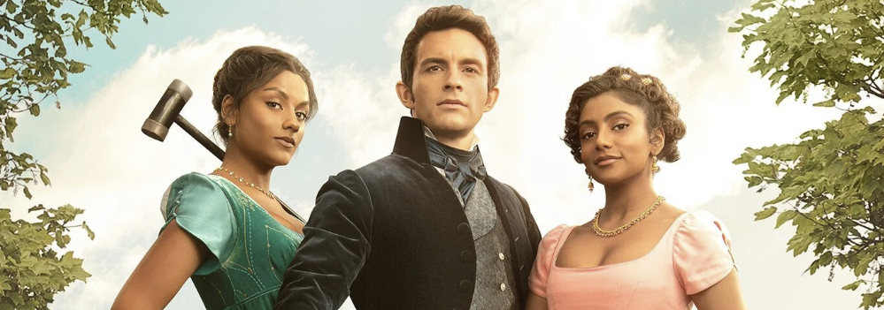

Temporadas

Temporada 1
El pacto y romance entre Daphne Bridgerton y Simon Basset, el Duque de Hastings.
Temporada 2
El triángulo amoroso y la atracción inevitable entre Lord Anthony Bridgerton y Kate Sharma.
Temporada 3
La historia de amor entre Colin Bridgerton y Penelope Featherington.
Temporada 4
El próximo capítulo enfocado en la búsqueda del amor en la alta sociedad.